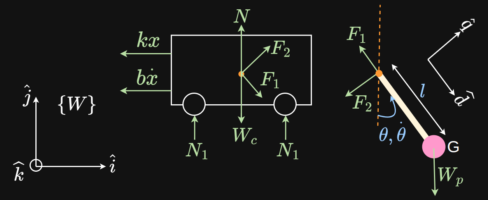
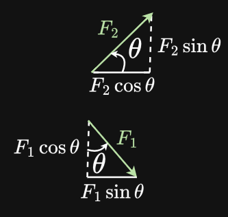
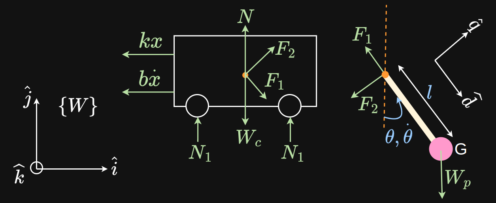
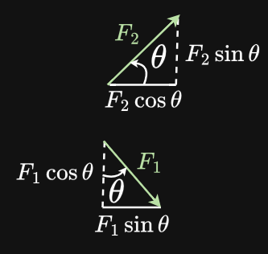

☰
Dynamics: Cart
FBD
 Scenario

FBD

Scenario

FBD

Forces on the cart - overview
- External horizontal force $f_x$
A motor applies a horizontal force $f_x$.
- Forces transmitted by the pole at point
A
Because of Newton's 3rd law, there are 2 forces acting on the cart at A that are equal and opposite to those acting on the pole at that point.
- The cart's own inertial resistance, i.e. the cart's resistance to acceleration.
- For any positive motion, the spring force resists and pulls back. For any positive velocity, the damper pulls back.
- Friction and reaction forces at the wheels are ignored.
Summation of these forces will equate to zero as per d'Alembert's principle.
Forces transmitted by the pole
This could result from:
- Inertial resistance of the pole mass at point
G to the cart's motion
- External forces applied to the pole
- Gravity acting on the pole
At the point of rotation (attachment to the cart) A, these are drawn as $F_1, F_2$ in the same direction as the forces experienced by the cart. They are not drawn arbitrarily; their directions have been chosen. But, their directions are not known.
Equation of motion
A is the point at which the mass of the cart is concentrated.
$$\begin{align*}
\newcommand{eqRef}[1]{\tag{#1} \label{eq:#1}}
\sum F_\hat{i}^{\scriptsize{A}} &= m_{\scriptsize{A}} \ddot{x} \\
&= -kx -b\dot{x} + F_2\, cos\theta + F_1\, sin\theta + f_x \\\\
\ddot{x} &= \frac{-kx -b\dot{x} + F_2\, cos\theta + F_1\, sin\theta + f_x}{m_{\scriptsize{A}}} \eqRef{4}
\end{align*}$$